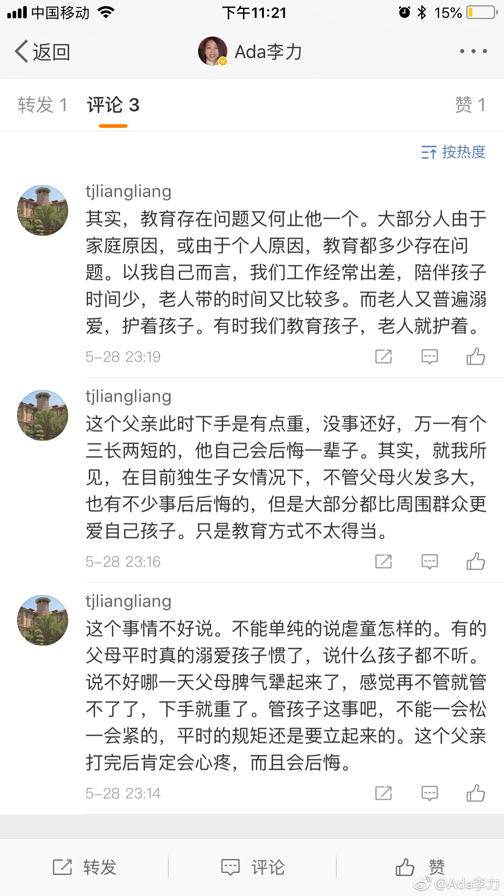

刚刚转了个某位父亲在公众场合爆扇女儿耳光的视频，看得血往脑袋上涌，人渣，混账这些词都不足以形容我看视频时的愤怒。
我的愤怒是有来由的，因为小时候我被自己父母痛打过，在公众场合被父亲痛打的次数也有过几次。痛打让我有了认知提升么？老实说没有，除了恐惧委屈外，就是觉得大人的火来得莫名其妙。
前两年去上海探望父母时，我父亲说小时候我挨打最多，那时他打我们，更多是因为他面子上过不去。很欣慰父亲有勇气承认这点。我说：“我知道，所以我到现在都很痛恨父母打孩子”。即使在我很小年纪，我也有感知，打我倒不是我犯了多大的错，而只是恰好父母那天情绪不好。
评论中这位网友把打孩子等同于管教。这两者根本不是一回事情。父母如果无力正常管教孩子，就虚心地承认好了，不是天生就会做父母的，都需要学习和实践，一步步来。但打着爱的名义，对孩子行使暴力之事，我说什么也无法苟同这种逻辑。
我的愤怒是有来由的，因为小时候我被自己父母痛打过，在公众场合被父亲痛打的次数也有过几次。痛打让我有了认知提升么？老实说没有，除了恐惧委屈外，就是觉得大人的火来得莫名其妙。
前两年去上海探望父母时，我父亲说小时候我挨打最多，那时他打我们，更多是因为他面子上过不去。很欣慰父亲有勇气承认这点。我说：“我知道，所以我到现在都很痛恨父母打孩子”。即使在我很小年纪，我也有感知，打我倒不是我犯了多大的错，而只是恰好父母那天情绪不好。
评论中这位网友把打孩子等同于管教。这两者根本不是一回事情。父母如果无力正常管教孩子，就虚心地承认好了，不是天生就会做父母的，都需要学习和实践，一步步来。但打着爱的名义，对孩子行使暴力之事，我说什么也无法苟同这种逻辑。
- 